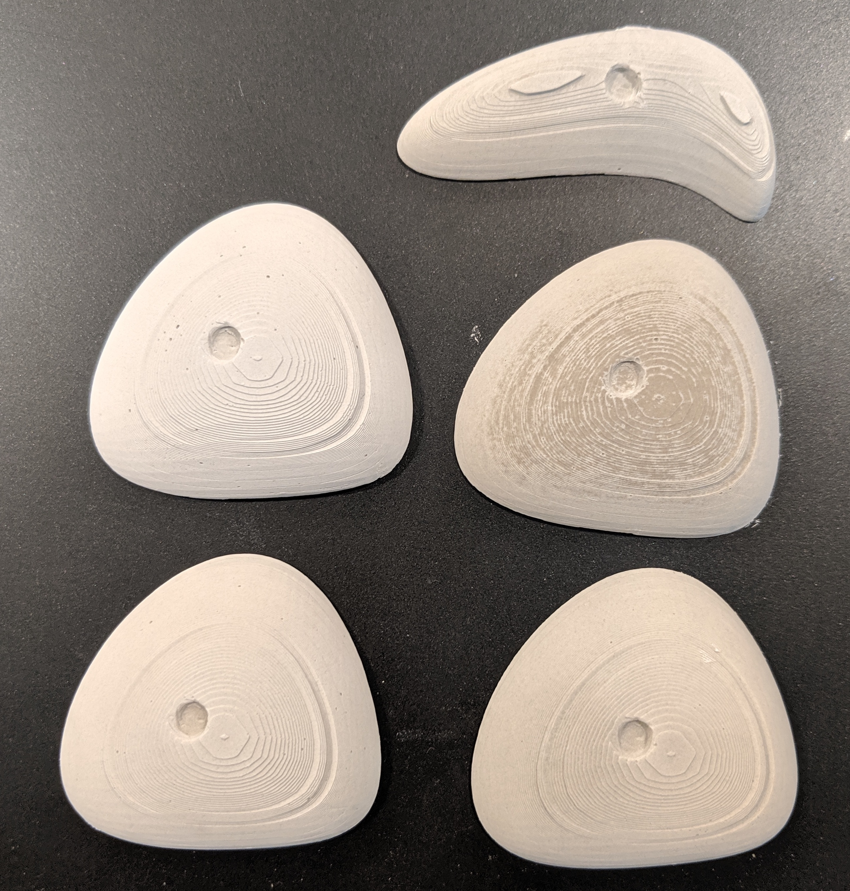

Cindy Feng's Assignment 6
This assignment was milled in the CoMotion MakerSpace on 05/19/2019, and completed at home.

Links/Files used:
- Thingiverse source for climbind hold stl's
- Final CAD model for milling machineable wax mold, f3d
- Final CAD model for milling machineable wax mold, stl
- gcode file for 1/8 end mill
- Bantam btm file for milling
Ideation
I knew I wanted to stick with a one part mold to keep the assignment simple, and I got inspiration from going to the climbing gym, because the holds are flat on one side! Here is the link to the Thingiverse source for climbing hold fridge magnets where I downloaded the stl files. There were many stl files for different hold shapes, but I found the three that could be milled with a 3 axis mill.
CAD/CAM in Fusion 360
I obtained the dimensions for the machineable wax from Kim on Slack. Thanks Kim! I started by modeling the wax stock. I decided to use Fusion 360 to eliminate one import step had I decided to use another CAD software. Using Fusion 360 was pretty intuitive for me to pick up, given all the other CAD applications I already know!
I then made a little slot in the wax, leaving about 5 mm of wall on each side. I scaled the climbing hold stl's down by 1/8th size, so that they were roughly 45 mm wide. I then placed 3 holds into the slot so that they fit side by side.
I was having a lot of issues getting my toolpath to run, and it took about an hour before I realized my entire model was not meshed together in one body. So I merged all the meshes and this is what I pulled into the CAM workbench in Fusion 360.
Once I pulled it into the CAM workbench, I used Adaptive Clearing to create a toolpath with a 1/8" flat end mill. I also played with using a 1/16" ball mill for a finishing operation, but when I got to the CoMotion Makerspace for Professor Nadya's office hours on Sunday, I knew simplifying to one operation would be easiest.
I also had no real reason why I decided to do 3 climbing holds (I think it's cause I realized 3 of the stl's I pulled from Thingiverse would work), so I decided to cover one of the holds and only mill 2 of them, to save time.
Also, at office hours on Sunday I decided to mill on the tabletop Othermill, to allow other students to get their wax milled on the shop bot. This is also when I got the wax! Nadya helped me cut the block in half, and then saw down 1/3 of the wax so that it could be milled by the smaller Othermill. The wax block that I hot glued to the othermill bed was 1 inch high.
Milling
I exported the gcode for the Adaptive Clearing toolpath, which said it would take 5 hours in Fusion 360, which I was skeptical about. I did change the step down to 1.5 mm which was slightly less than half the diameter of the 1/8" flat end mill. Below is the screenshot from what I pulled into Bantam. In Bantam, I actually reduced the size of the material by half so I could see that the toolpath would fit.
And below are the machine settings! I moved the toolpath around until it was inside the material that was on the screen. I also played with the Z placement until the white removal paths were at the top of the material. I noticed that I was getting an error message that warned me that the spindle was retracting too far, so I adjusted the retract height to 5 mm (default was 10 mm) within Fusion 360 and exported the gcode again.
I then began milling the machineable wax! The image below shows the ratchet bandsawing and sawing that Nadya and I did to remove 1/3 of the material. In the back is the wax loaded into the machine!
The wax became so covered with removed material that I could no longer see the inside! I was pausing the mill to vacuum every few minutes, but I eventually realized vacuuming wasn't really necessary unless I wanted to see the part that was being milled.

A progress shot after vacuuming:
And here is the wax when it was finished milling! Bantam actually gave a 2 hr 46 min milling time in the beginning, and the machine stopped when there was still 50 minutes left, so the machine time was inaccurate. In total, it took just under 2 hours to mill.

I did notice that there was a small amount of material that didn't get machined to the left of the left hold above due to the machine thinking the tool would not have enough space, so I ended up getting out an exacto-knife and a flathead screwdriver to "chisel" that bit of material out of the mold! It wasn't perfect, however.
The Silicone Mold!
Using the Oomoo that I bought from the class bill of materials, two paper cups and some wooden stir sticks, I set up all the materials I needed to mix and pour the silicone in my apartment hallway (plus gloves, of course!)

I then mixed the two parts of Oomoo together and poured it into the wax mold!
I then let it cure overnight. In the morning, this is the silicone mold that I pried out with a butter knife!
Plastering!
I grabbed some Hydro-stone cement powder that classmate Lukas left in the Mill project room! Thanks Lukas! I then started by eyeballing a 3:1 ratio for powder to water, but the mixture looked too watery. Using advice from classmate Dawn that the mixture had to be the consistency of "heavy cream," I added more powder to the mixture until I thought it was a thicker consistency, then I poured it in after snipping the Ziploc bag! I figured if I got the ratio wrong, I could clear out the mold and try again.
However, the consistency I visually estimated seemed to work fine! And I proceeded to make 4 more plaster pieces. I decided to only do 1 climbing hold to complete the assignment (4 identical pieces) in case I ran out of plaster powder. With the last hold, I made two holds!
I noticed all the plaster was different colors, and one wasn't mixed thoroughly enough! However, the pieces were still solid, and unless I smashed them with a hammer, I couldn't precisely tell the difference in their brittleness!
Acknowledgements: Nadya for helping me bandsaw the machineable wax, Lukas for the plaster powder, and everyone who posted helpful tips on Slack!